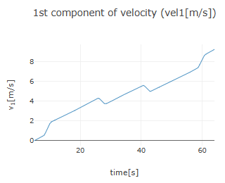

[ Operating guide ]
■ Zero Adjusment of Data
Clicking on the rows labeled "▶ Zero adjustment for acceleration", "▶ Zero adjustment for velocity" or "▶ Zero adjustment for position" will display the respective zero adjustment settings (click again to close). Zero adjustment allows you to shift the entire dataset by a specified value to adjust the zero point.
For example, after loading a set of acceleration data and setting the time domain for analysis, the acceleration graph shown below may be obtained. Due to systematic errors in the acceleration sensor, the recorded values may be offset. In this graph, the point where the acceleration should be zero is approximately 0.156 m/s2.
In this case, check the box for "Zero adjustment of the first component" in the "Zero adjustment for acceleration" settings, and enter the acceleration value to be used as the zero point in the input field to the right (as shown below, the "Average" button on the right was pressed to input the average acceleration value for the specified time domain). After entering the value, click the "Zero Adjustment" button to shift the entire dataset of the checked component by the entered value and update the graph. Clicking the "Clear" button will cancel the zero adjustment.
If measurement starts with zero initial velocity and ends at zero velocity, the integral of acceleration over the measurement time range should result in zero. In such cases, the average acceleration value (assuming a constant measurement interval) should be zero. If pressing the "Average" button in the zero adjustment settings yields a non-zero value, performing zero adjustment using that value will ensure proper alignment.
Below are graphs showing the velocity calculated without zero adjustment and with zero adjustment for the above acceleration data. The velocity graph obtained with zero adjustment is more accurate.


The procedures for "Zero adjustment for vecolity" and "Zero adjustment for position" are similar. If the initial and final positions of the motion are the same (i.e., the object returns to its starting position after the motion), the integral of velocity over that time range should result in zero. For such motion, the average velocity (with a constant measurement interval) should be zero. If pressing the "Average" button in the zero adjustment settings yields a non-zero value, performing zero adjustment using that value will ensure that the integrated velocity brings the object back to its original position. For the zero adjustment for position, setting the value to be treated as the origin allows any point to be defined as the origin. Essentially, this is equivalent to specifying the initial position when calculating position from velocity through numerical integration.
However, note that performing zero adjustments for acceleration or velocity can sometimes result in discrepancies with the original motion, so adjustments should be made with a proper understanding of their effects.